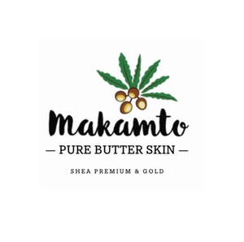

Trade Mark Journal No.2025/020 16 May 2025
UK00004194932 26 April 2025 (3)
Mark 1
Mark 2

- Class 3
- Body creams; Body creams [cosmetics]; Body firming creams; Face and body creams; Scented body creams; Creams (Non-medicated -) for the body; Body lotions; Body cream; Body and facial creams [cosmetics]; Scented body lotions and creams; Body moisturisers; Body lotion; Moisturizing body lotions; Face and body lotions; Beauty creams for body care; Body cream soap; Moisturising body lotion [cosmetic]; Body mask cream; Skin creams; Creams for the skin; Scented body lotions; Body shampoos; Body deodorants; Body butters; Body and facial butters; Lotions for face and body care; Body mask lotion; Body gels [cosmetics]; Body and facial gels [cosmetics]; Moisture body lotion; Body cream for cosmetic use; Body gels; Body oils [for cosmetic use]; Body emulsions; Creams for firming the skin; Body and facial oils; Body oils; Deodorants for body care; Skin creams [cosmetic]; Body sprays; Cosmetic creams for the skin; Skin creams [for cosmetic use]; Creams for tanning the skin; Body milks; Sun-tanning creams and lotions; Facial creams; Lotions for the skin; Cosmetic body scrubs; Body scrubs [cosmetic]; Body butter; Non-medicated skin creams; Skin creams [non-medicated]; Skin lotions; Cosmetic creams and lotions; Body scrubs; Toning lotion, for the face, body and hands; Moisturising skin creams [cosmetic]; Skin recovery creams [cosmetics]; Body cleansing foams; Fluid creams [cosmetics]; Moisturising creams, lotions and gels; Body fragrances; Body washes; Hair creams; Cosmetic creams for firming skin around eyes; Body sprays [non-medicated]; Suntan creams [self-tanning creams]; Body massage oils; Facial creams [cosmetics]; Exfoliating scrubs for the body; Body soap; Body milk; Cosmetic nourishing creams; Cosmetic body mud; Non-medicated body soaks; Skin lightening creams; Cosmetic massage creams; Skin whitening creams; Creams (Skin whitening -); Body emulsions for cosmetic use; Anti-aging creams; Perfumed body lotions [toilet preparations]; Moisturising creams; Body masks; Face creams; Moisturizing creams; Hand and body butter; Body wash; Moisturising skin lotions [cosmetic]; Suntan creams; Anti-ageing creams; Body oil [for cosmetic use]; Beauty creams; Cosmetic creams for dry skin; Body scrub; Cleansing creams; Exfoliating creams; After-sun creams; Bath creams; Skin cream; Cosmetics in the form of creams; Body care cosmetics; Soaps for body care; Skin lotion; Exfoliant creams; Skin care creams [cosmetic]; Cosmetic creams for skin care; Facial creams [cosmetic]; Facial creams [for cosmetic use]; Sun-tanning creams; Shaving creams; Milky lotions for skin care; Sunscreen creams; Tanning creams; Toning creams [cosmetic]; Non-medicated skin lotions; Make-up for the face and body; Body deodorants [perfumery]; Body powder; Hair and body wash; Body powder (Non-medicated -); Creams (Cosmetic -); Cosmetic creams; Body glitters; Shave creams; Facial lotions; Beauty tonics for application to the body; Depilatory creams; Baby body milks; Skin cream [for cosmetic use]; Skin cleansing cream; Soaps; Scented soaps; Loofah soaps; Bath soaps; Perfumed soaps; Soaps and gels; Soap; Aloe soaps; Shaving soaps; Carbolic soaps; Laundry soaps; Non-medicated soaps; Cosmetic soaps; Cream soaps; Toilet soaps; Dish soaps; Soap products; Almond soaps; Facial soaps; Liquid soaps; Hand soaps; Handmade soap; Granulated soaps; Deodorant soap; Soap (Deodorant -); Liquid bath soaps; Saddle soaps; Non-medicated toilet soaps; Bath soap; Liquid soaps for laundry; Perfumed soap; Soaps for brightening textiles; Soap powders; Aloe soap; Antiperspirant soap; Soap (Antiperspirant -); Detergent soap; Sponges impregnated with soaps; Soaps for laundry use; Creams (Soap -) for use in washing; Shaving soap; Cakes of soap; Soap (Cakes of -); Cosmetic soap; Shower soap; Laundry soap; Soap sheets; Soaps for household use; Bars of soap; Beauty soap; Soap pads; Skin soap; Hand soap; Soaps for toilet purposes; Toilet soap; Almond soap; Liquid bath soap; Soap solutions; Waterless soap; Soaps in gel form; Cakes of toilet soap; Liquid soap; Granulated soap; Sugar soap; Soap powder; Liquid soap for laundry; Bar soap; Industrial soap; Cakes of soap for body washing; Soaps for personal use; Soaps in liquid form; Saddle soap; Soap for brightening textile; Bath lotions (Non-medicated -); Shampoos; Soap free washing emulsions for the body; Aromatherapy lotions; Liquid soap used in foot bath; Liquid soaps for hands and face; Shaving lotions; Paper soaps for personal uses; Perfumed lotions [toilet preparations]; Liquid soap for dish washing; Aftershave lotions; Cleansing lotions; Liquid soap used in foot baths; After-shave lotions; Bath lotion; Massage oils and lotions; Depilatory lotions; Bath and shower oils [non-medicated]; Non-medicated bath oils; Bath oils (Non-medicated -); Non-medicated lotions; Non-medicated shampoos; Cakes of soap for household cleaning purposes; Emollient shampoos; Oils for perfumes and scents; Facial butters; Body oil; Body spray; Body soufflé; Exfoliating body scrub; Scented body spray; Body polish; Body mist; Body glitter; Body oil spray; Body splash; Body mask powder; Preparations for the conditioning of the body; Body talcum powder; Face and body glitter; Body paint (cosmetic); Oils for the skin; Make-up preparations for the face and body; Face and body masks; Wax strips for removing body hair; Preparations for the care of the body; Hair cream; Hair mousse; Hair lotion; Hair oil; Hair balm; Hair wax; Hair oils; Hair lotions; Hair shampoo; Hair moisturizers; Hair powder; Hair moisturisers; Hair pomades; Hair balms; Hair styling lotions; Hair mousses; Hair removing cream; Hair glaze; Hair conditioner; Hair texturizers; Hair shampoos; Hair gel; Hair dye; Hair liquid; Hair spray; Colouring lotions for the hair; Baby hair conditioner; Hair emollients; Dyes for the hair; Hair dyes; Hair styling gel; Hair relaxers; Hair mascara; Hair colourants; Hair lighteners; Hair lacquer; Hair serums; Hair cosmetics; Hair styling waxes; Styling paste for hair; Hair sprays; Oils for hair conditioning; Hair styling spray; Hair care creams; Hair conditioners; Non-medicated balm for hair; Mousses [toiletries] for use in styling the hair; Hair rinses; Hair moisturising conditioners; Hair bleaches; Hair protection mousse; Hair balsam; Hair liquids; Wax treatments for the hair; Hair gels; Hair bleach; Hair care lotions; Shampoos for human hair; Styling sprays for the hair; Hair colouring; Hair glazes; Hair conditioner bars; Non-medicated hair shampoos; Hair color; Hair lacquers; Creams for fixing hair; Hair nourishers; Hair styling gels; Styling gels for the hair; Non-medicated hair lotions; Oil baths for hair care.
Makamto LTD